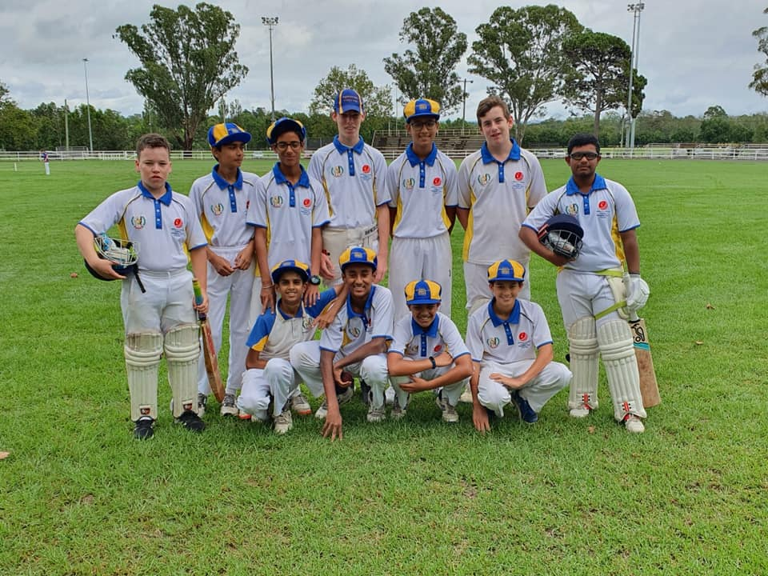
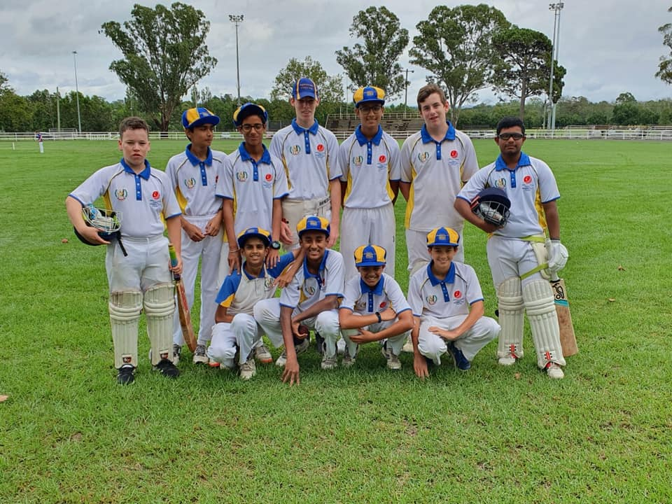
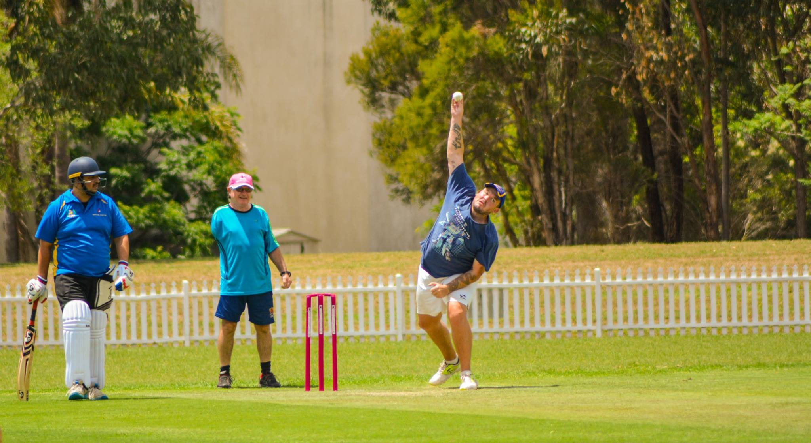
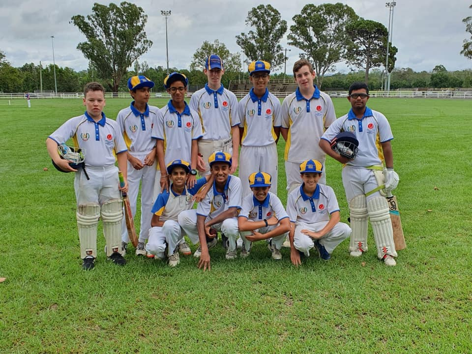
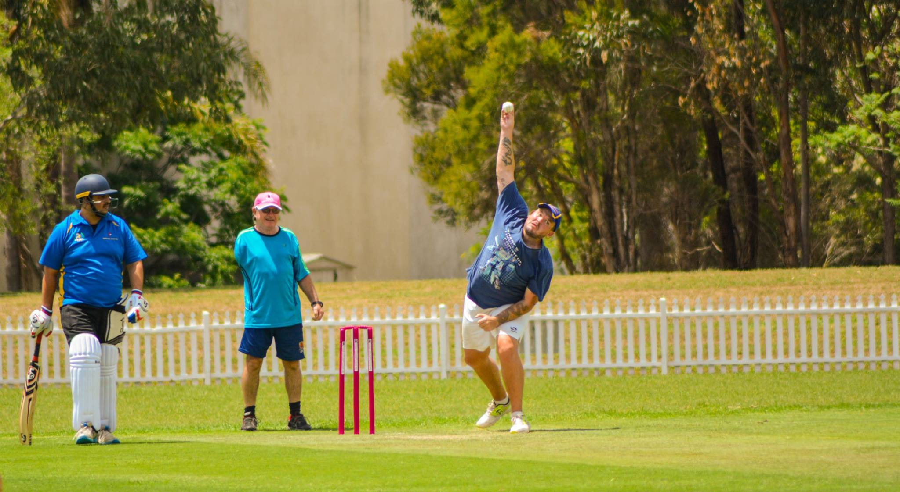
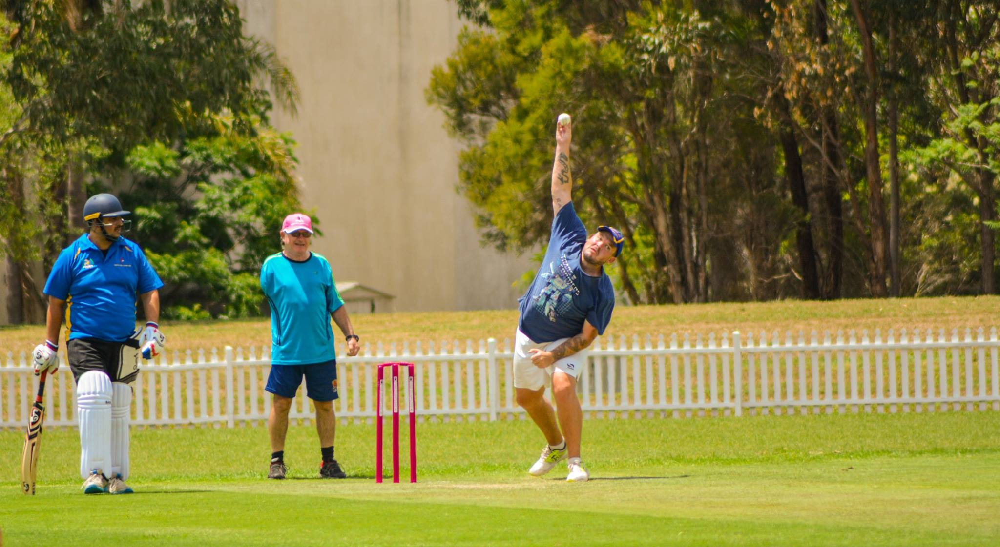
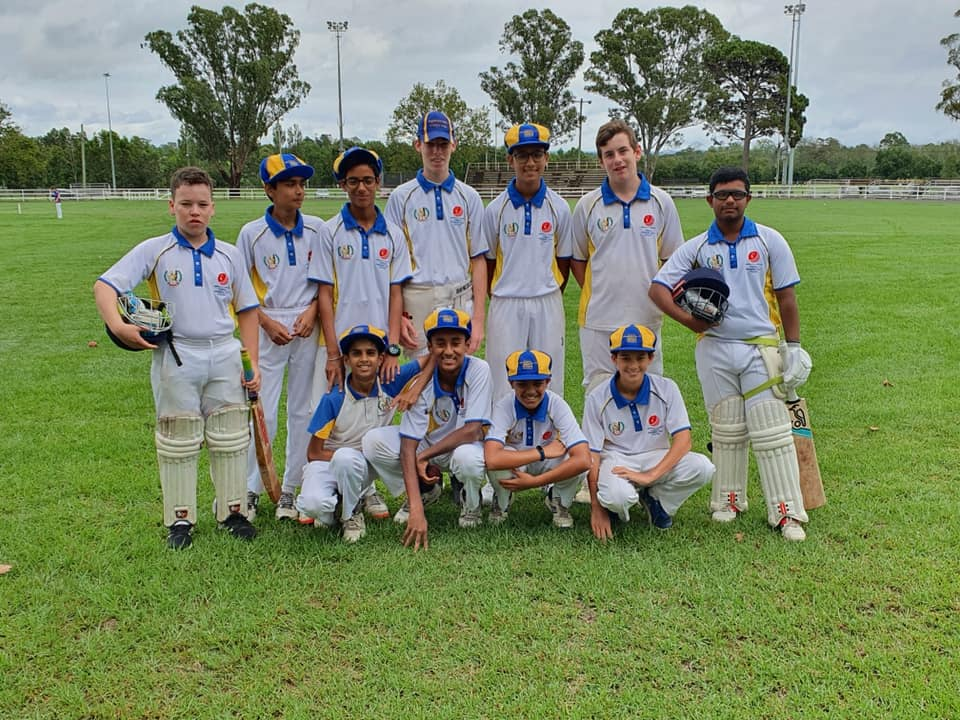
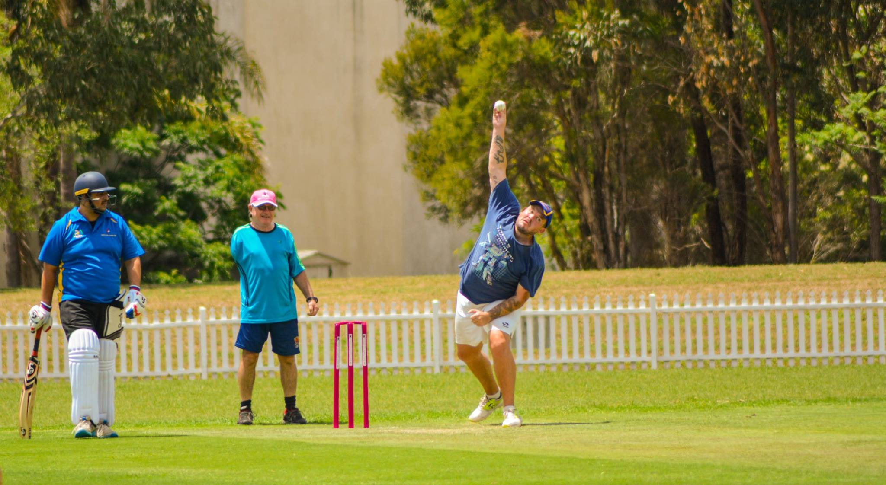

 





The Ingleburn RSL Cricket Club is a community-based club that welcomes players of all ages and skill levels. We have a strong tradition of sportsmanship and fair play, and we are proud to be part of the local community.
Location: Ingleburn, NSW
Established: 1972
President: John Doe
Secretary: Jane Smith
Email: info@ingleburnrslcricket.com
Phone: (02) 1234 5678
Address: 123 Main Street, Ingleburn, NSW 2565